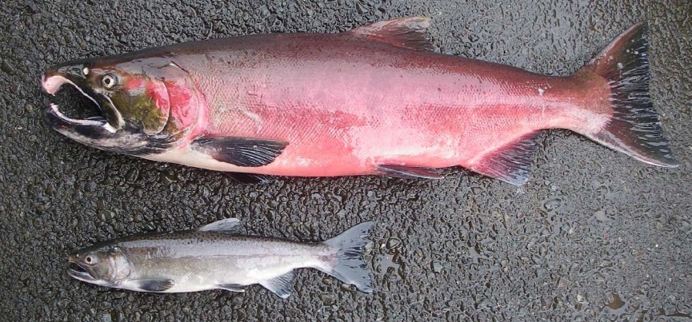
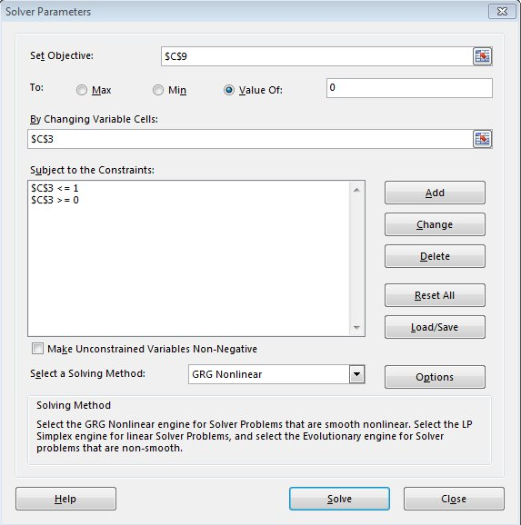

Numerical analysis
Numerical analysis is a general term for methods that yield approximate solutions to problems, instead of analytical ones. Analytical solutions come from developing equations to describe a system, and then solving for some quantity of interest. Analytical solutions are mathematically correct, which means they have an infinite precision - you can calculate analytical solutions to as many decimal places as you need, and the answer will be accurate.
In contrast, numerical methods are sophisticated versions of trial and error. Numerical solutions have a fixed
level of precision, meaning that they are only expected to be accurate to a specified number of decimal places.
We get to specify the precision, up to a point - remember, in Excel we get 15 significant digits to play with.
In the majority of cases you would encounter, a solution that is accurate to 15 significant digits is more than
accurate enough. If you only require a solution to a few significant digits anyway, numerical solutions can be
found that are identical to analytical ones to that level, either approach will work equally well. For some
equations analytical solutions don't exist, in which case numerical methods are the only option.
We actually have two goals for today.
-
Learn to use numerical analysis to find solutions to problems.
-
Learn how to translate equations expressed in mathematical notation into cell formulas in Excel.
The second goal will emerge from working on the first. As you work through the problems, I will start by giving
you examples of how to do the translation, and then will give you only advice about how to make the translation,
and will end by only giving you the mathematical notation and telling you to do the translation yourself. Don't
hesitate to ask for help if you get stuck, but do try it yourself each time first.
Jack and hooknose male salmon
Chinook salmon are a species of Pacific salmon that hatched in freshwater streams, move out to the ocean to develop into adults, and then return to their natal streams to spawn. Chinook males are found in two different morphs, "jacks" and "hooknoses". Hooknoses are the large males with the curved upper jaw that you probably think of when you picture a salmon. Jacks are small males that more closely resemble females in size and color, and lack the curved upper jaw. The picture to the left shows the two different kinds of males - the jacks are very different.
For a long time jacks were thought to be "runts" that didn't reproduce. Further study has shown, however, that jacks come from the largest juveniles that reach sexual maturity early, and return to spawn a year or more younger than the hooknoses, but at a smaller body size. Rather than being runts, they are sexually precocious. Female salmon lay unfertilized eggs into depressions in the gravel at the bottom of a stream (called "redds"), which are then fertilized externally by a male. The large, hooknosed males defend females at redds, and chase away rival males. Jacks are not able to defend females against the larger, older hooknose males by fighting, but they can instead use their small body size as an advantage. Jack salmon will hide in proximity to a female and her intended hooknose male mate, and then rush in and fertilize the eggs while the hooknose male is busy defending against other big males in the area.
The success of the jack and hooknose male reproductive strategies depends on how common each is in the population. When there are few jacks in the population, the hooknose males are constantly distracted by challenges from other hooknose males, and since the jacks are more easily overlooked they have much higher success in sneaking in and fertilizing eggs. When jacks are very common, and thus the hooknose males are relatively less common, the hooknose males can focus on defending against jacks, and can fertilize the eggs as soon as they are laid by the females; jacks end up fertilizing very few eggs when there are too many jacks around.
This system is an example of "frequency dependent" selection, because the success of each reproductive strategy depends on the frequency of each type of male in the population. Frequency dependent selection tends to lead to a "stable polymorophism", meaning that more than one morphology is found in the population; because both male morphologies become highly successful when they are rare, they are protected from being eliminated from the population.
Expected proportion of jack males in the population
|
According to this graph, both strategies depend on the percent jacks in the population. As you move along the x-axis, you'll see that at nearly every point one strategy is better than the other. When the percent jacks is low, the jack strategy is better, and jacks will have higher fitness. Higher fitness implies that more of the offspring produced will be jacks, and in the next generation the percent jacks will be higher. Eventually the percent jacks will get large enough that the hooknose strategy starts to have higher fitness, and hooknoses will start to increase in frequency. The only place where neither strategy has an advantage is at p*, because the fitnesses are the same there - p* is thus the equilibrium percent jacks, which is the point where no change in percent jacks is expected. Populations should generally approach this equilibrium. Since the equilibrium isn't at 0 or 100%, we expect that there will always be a mix of the two male strategies in populations - thus, a stable polymorphism. |
 We will use what is already known
from studies of breeding success in jacks and hooknose males to estimate the proportion of jacks we
would expect to find in a population, given the reproductive fitness of each type of male at a
particular proportion of jacks in the population. Fitness here refers to Darwinian fitness, which is a
measure of an individual's genetic representation in the next generation. Fitness includes both survival
and reproduction, but we can use reproduction as an index of fitness (all of the salmon die after
spawning, so neither has a long-term survival advantage in any event).
We will use what is already known
from studies of breeding success in jacks and hooknose males to estimate the proportion of jacks we
would expect to find in a population, given the reproductive fitness of each type of male at a
particular proportion of jacks in the population. Fitness here refers to Darwinian fitness, which is a
measure of an individual's genetic representation in the next generation. Fitness includes both survival
and reproduction, but we can use reproduction as an index of fitness (all of the salmon die after
spawning, so neither has a long-term survival advantage in any event).
Let's see how we can use numerical analysis to estimate this equilibrium point.
Step 1. Download data.
Download this file and open it. The first worksheet (called "Prop jacks graphs") has three columns, one labeled "Proportion jacks", one "Jack fitness", and one "Hooknose fitness". Proportions of males that are jacks from 0 to 1 are given (which is the range of all possible values - we can't have negative proportions, or proportions greater than 1). Fitness will be represented by the number of offspring per male on average.
Step 2. Calculate the fitnesses of jacks and hooknoses.
From studies of breeding success for these different male morphs, the following equations predict the fitness of each morph:
Jack males: fitness = 3.5 e -3 (prop. jacks)
Hooknose males: fitness = 0.5 e 2 (prop. jacks)
To do the calculations you will need to translate these equations into Excel formulas - I'll give you the first one for jack male fitness, which you'll enter into cell B2:
=3.5*exp(-3*a2)
Copy and paste it to the rest of the Proportion jacks (through cell b12).
Now you can translate the equation for hooknose males and enter it into C2, and copy/paste to the rest of the hooknose male cells (if you enter it correctly you'll get 0.5 as the value in cell C2).
Step 3. Plot jack fitness and hooknose male fitness against proportion jacks.
Select the three columns, and insert a scatter plot
showing only smooth lines (no symbols). If your equations were entered correctly, your graph should look like this
(this is the default graph, without changing the x-axis scaling, and without adding axis labels - not okay for a final product).
Once you have your graph, find the place(s) where the lines cross. In cell B14 enter how many times the lines cross - this will tell us how many equilibrium solutions we need to find.
In B15 enter the approximate equilibrium proportion jacks you expect based on your interpretation of the graph - in other words, at about what x-axis value does the line crossing occur?
Step 4. Set up conditions for the Solver to solve.
Switch to the worksheet called "Prop jacks equil", and you will see labels for "Proportion of jacks" (B3), "Fitness of jacks" (B5), "Fitness of hooknoses" (B7), "Difference in fitness" (B9), and "Analytical solution" (B12). To set up the worksheet to find the equilibrium proportion of jacks do the following:
- In cell C3, enter the proportion of jacks you expect will be the equilibrium, which you entered in cell B15 of sheet 1. This will be your starting value for Solver to work with, which will work best if it's an educated guess
- In cell C5 enter the expected fitness of jacks, given this beginning proportion of jacks. This is the same formula you entered in the previous sheet for fitness of jacks, but you will use C3 from this sheet as the proportion of jacks (so, you can copy and paste the formula from the "Prop jacks graphs" sheet, but then change the cell reference to point to c3 instead of a2 in your exp() function).
- In cell C7 enter the fitness of hooknoses, given this beginning proportion of jacks. Use the formula you entered in the "Prop jacks graphs" sheet, but use C3 as the proportion jacks.
- In the "Difference in fitness" cell, cell C9, calculate the difference between the fitnesses.
Since fitnesses are always non-negative, we can simply take the difference here - the difference will only be zero when the fitnesses are equal, and when it's zero we've found the equilibrium proportion of jacks expected in the population.
Now everything is set, we just need to use Solver to find the equilibrium proportion of jacks.
Step 5. Use the Solver to calculate the equilibrium proportion of jacks.
The Solver is found at the right side of the ribbon in the Data tab, but it may not be turned on yet.
If you don't see a Solver option, do the following:
- Select "File", and find the "Options" at the bottom of the green field on the left side of the window.
- At the bottom of the "Excel Options" window will be a selection called "Add-Ins", which you should select.
- At the bottom of the "Add-ins" window is the "Manage" "Excel Add-ins" area - click the "Go" button.
- Finally, check the box next to "Solver Add-in" and click "OK".
Now when you switch to "Data" you should see the solver option at the right side of the ribbon.
Start the Solver. There are several things we need to do here:
-
Give Solver an objective. To do this, enter $C$9 into the "Set Target Cell" box - the objective is the difference in fitnesses between the strategies that we want to be zero.
-
Click on the "Value of" button for the "To:" option and enter 0 as the value - in other words, we're telling Solver we want the differences to be 0.
-
Tell solver what cells to change in order to meet the objective. Enter $C$3 into the "By Changing Variable Cells" box - this will alter the proportion of jacks. Excel will change this cell until the difference is 0 (or, more correctly, until it is as close to 0 as we've asked it to get).
-
Tell solver what numbers it's allowed to use when it changes the variable cells. We know that the proportion jacks can't be lower than 0 or greater than 1, but Solver has no way to know this. We can tell solver to only try out proportion jack values to numbers between 0 and 1 by setting constraints. Click on "Add" next to the "Subject to the constraints" area. Set the cell reference to C3 and use <= 1 as the constraint (click "OK" to apply the constraint). Repeat this operation to add the constraint that cell C3 must be >= 0. Both constraints should now be in the Subject to the Constraints list.
When you're done with the setup, your solver parameters should look like this. Click on "Solve".
Note that the difference in fitness is not exactly equal to 0. This is a numerical solution, and Solver quits when it gets sufficiently close to its objective (how close can be set by you with the "Precision" and "Convergence" options, but the default is usually adequate).
Step 6. Confirm this is the correct answer by
changing the starting values, and by calculating the analytical solution
Since this is a numerical method, there's a chance that the solution isn't the right one. You can guard against this possibility by comparing the proportion of jacks that Solver produced against the graph to see if it at least looks like the right value. The proportion jacks you should have gotten (0.38918) is in fact about where the two lines cross on the graph.
Another way to double-check the result is to change the proportion of jacks to 0 and run the Solver again. Then, change the proportion of jacks to 1 and run it again. You'll see that the difference in fitness cell is not identical in each run, which means the proportion of jacks isn't identical either. But, the solution should be the same to at least five decimal places, regardless of the starting point, which will be more than precise enough for our purposes. If we were going to use this number to test experimental data, we would be comparing proportions of jacks in populations from the wild, and with all the variation that goes along with field studies we would be satisfied with a predicted value that is accurate to the 1% level, and our estimates are much better than that.
Finally, this is a case in which we could have used an analytical solution. If we set the two equations equal to one another and solve for p, the equilibrium value of p would be:
=(ln(3.5)-ln(0.5))/5
Type this into C12, next to the label "Analytical solution" - it should match your Solver solution to several decimal places, which shows you that numerical methods are viable alternatives to analytical approaches.
Assignment
That's it for part 1 - save your Excel file and we'll use it for part 2 as well.